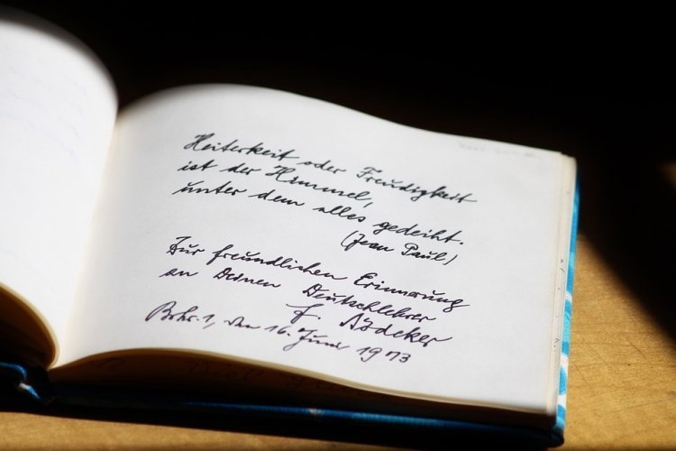

Posting Teratas
CIRI-CIRI PUISI

Ciri-ciri puisi lama
Karya sastra puisi memiliki dua versi, yakni puisi lama dan puisi baru.
Ciri-ciri puisi lama berbeda dengan puisi baru. Berikut ini ciri-ciri puisi
lama:
- Nama pengarang puisi biasanya tidak diketahui.
- Terikat berbagai peraturan seperti rima, irama, baris dan bait.
- Disebut sastra lisan karena penyampaiannya dari mulut ke mulut.
- Berisi tentang kerajaan dan fantastis.
- Majas yang digunakan tetap dan klise.
Ciri-ciri puisi baru
Karya sastra puisi juga memiliki versi baru. Nah, pengertian puisi baru ini
merupakan orde baru bagi penyair dengan sesuatu yang lebih bebas. Nah, berikut ini
merupakan ciri-ciri puisi baru:
- Nama pengarang puisi banyak diketahui.
- Tidak terikat peraturan seperti rima, irama, baris dan bait.
- Penyampaiannya melalui lisan serta tulisan.
- Berisi tentang kehidupan-kehidupan.
- Majas berubah-ubah atau dinamis.
- Berbentuk rapi dan simetris.
- Persajakan akhir biasanya teratur.